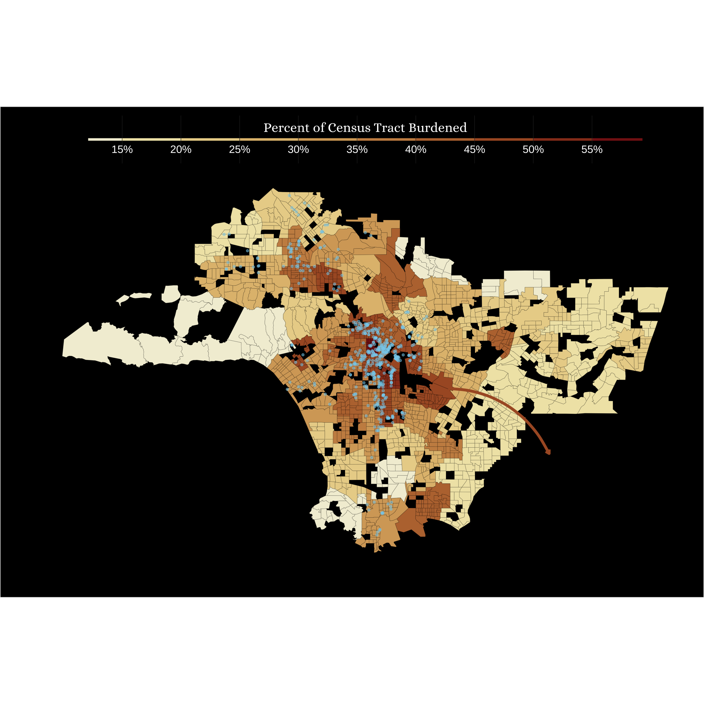

Who, What, Where: Exploring Affordable Housing in Los Angeles, CA
Investigating the access to and need for affordable housing in the Los Angeles County area to guide equitable approaches to the housing crisis.
Geospatial
Quarto
R
MEDS
Author
Luna Herschenfeld-Catalán she/her
Published
March 9, 2024
Research Question
The housing crisis has affected cities across the country. Different approaches to providing resources have had varying degrees of success. Many cities simply need a greater access to affordable housing. Equitable approaches that avoid displacement require understanding what the problems are, where they are occurring, who is being affected, and what is being done currently.
Takeaways
The neighborhoods of Maywood, Commerce, Bell Gardens, and Cudahy have high rent burden, high eligibility for affordable housing, and have not had any projects built there.
A density ridge plot shows the demographic distribution of the census tracts in LA compared to the tracts with affordable housing built in them. There is a greater proportion of Black and Hispanic people in tracts with affordable housing built in them compared to the average across LA.
A bar plot showing the amount of funding from the LAHD that has gone into building affordable housing. Order in 2015 led to an exponential increase in funding for projects, and the order in 2022 helped expedite permits.
Data
Sources
HOUSEHOLD CENSUS DATA
All census data was accessed from census.gov, using an API key and the tidycensus package.
Household Income for 2022: Estimated using PUMS (Public Use Microdata Sample) from the American Community Survey. I used the 1-year ACS PUMS file which represents about 1%of the total U.S. population (approximately 1.3 million housing unit records and about 3 million person records). I used the variable HINCP which is household income over the last 12 months, in conjunction with the household size. The file was too big to render every time, so it was exported to csv as pums_2022.csv.
TIGER Shapefiles for census tracts in 2022 for California were accessed from census.gov, and used to make more specific observations compared to the PUMA geometries which are areas of every 100,000 people.
NEIGHBORHOODS DATA
Census tracts and neighborhoods were connected using data from USC’s Neighborhood Data For Social Change which is a lab that aimes to use “data to help local civic actors track measurable change, improve local policies and programs, and ultimately advocate for a better quality of life within their communities”. The data is saved as Census_Tract_Locations__LA__20240206.csv which connected the information from PUMA to the census tract geometries.
AFFORDABLE HOUSING DATA
Affordable housing project data was accessed from data.lacity.org and saved as LAHD_Affordable_Housing_Projects_List__2003_to_Present__20240119.csv. This data set was last updated February 6, 2024, and is owned by the Department of Los Angeles housing. Each entry is a single project that has been started since 2003 to present.
Where?
To approach the element of where affordable housing would be most useful, and the elements that would go into that, a chloropleth map is very effective. This allows us to compare across geographic regions, such as census tracts, and then elaborate in greater detail on any interesting patterns that appeared. I
Wrangle and Clean Data
Code
pums_housing_income <-get_pums(state ="06",survey ="acs1",variables =c("PUMA","NP", # Number of persons in this household"HINCP", # Household income (past 12 months, use ADJINC to adjust HINCP to constant dollars"GRPIP", #Gross rent as a percentage of household income past 12 months")"FINCP"# Family income (past 12 months, use ADJINC to adjust FINCP to constant dollars) ),year =2022)
Code
# geometry of the puma 2022 shapefilespuma <-read_sf(here("blog", "2024-03-09-housing-la", "data", "tl_2022_06_puma20", "tl_2022_06_puma20.shp"))puma_la <- puma %>%filter(grepl(037, PUMACE20)) %>%rename(PUMA = PUMACE20)pums_housing_22 <-read_csv(here::here("blog", "2024-03-09-housing-la", "data", "pums_2022.csv"))# remove the duplicates from 2022 datapuma_house_codes <- pums_housing_22 %>%select(SERIALNO, PUMA) %>%distinct()puma_22 <- pums_housing_22 %>%inner_join(puma_la, by ="PUMA") %>%select(SERIALNO, WGTP, NP, HINCP, FINCP, GRPIP) %>%mutate(NP =as.numeric(NP),HINCP =as.numeric(HINCP),FINCP =as.numeric(FINCP),GRPIP =as.numeric(GRPIP)) %>%group_by(SERIALNO) %>%summarize_all(mean, na.rm =TRUE) %>%left_join(puma_house_codes)la_tract_vacant <-get_acs(state ="CA",county ="Los Angeles",geography ="tract",variables ="B25004_001",geometry =TRUE,year =2022)la_tract <- la_tract_vacant %>%mutate(NAME =gsub("; Los Angeles County; California", # elements that you want to remove"", # replace with blank NAME)) %>%mutate(NAME =gsub("Census Tract ", # elements that you want to remove"", # replace with blank NAME)) %>%filter(GEOID !="06037599100") %>%# islandsfilter(GEOID !="06037599000") %>%# islandsfilter(GEOID !="06037980003") %>%filter(GEOID !="06037980004") %>%filter(!(NAME >=9000& NAME <=9800))# -------------------------------------------------## Looking at the places where affordable housing projects have been built since 2003# --------------------------------------------------# read in affordable housing projects in LA from 2003 to presentah_raw <-read_csv(here("blog", "2024-03-09-housing-la", "data", "LAHD_Affordable_Housing_Projects_List__2003_to_Present__20240119.csv")) %>%clean_names()# clean affordable housing data ah_clean <- ah_raw %>%mutate(fun_date =as.Date(date_funded, tryFormats =c("%m/%d/%Y"))) %>%# make date_funded as datemutate(year = lubridate::year(fun_date)) %>%# make into year column select(name, year, fun_date, construction_type, site_community, total_units = project_total_units, housing_type, lahd_funded, in_service_date, gps_coords_on_map) %>%mutate(gps_coords_on_map =gsub("[POINT()]", # elements that you want to remove"", # replace with blank gps_coords_on_map)) %>%# remove these elements from gps column separate_wider_delim(gps_coords_on_map, delim =" ", names =c("empty", "coords"), # separate space from before the coordinatestoo_many ="merge") %>%separate_wider_delim(coords, delim =" ", names =c("Longitude", "Latitude"), # split lat and long coordstoo_many ="merge") %>%select(-empty) %>%st_as_sf(coords =c("Longitude", "Latitude"), # make into geometry objectcrs =st_crs(la_tract)) %>%st_join(la_tract) %>%mutate(site_community =str_to_title(site_community))
Assigning income categories to households
Create income breaks for households above 8 (from 9-20)
# creating dataframe with income brackets and eligibilitypeople <-c(1, 2, 3, 4, 5, 6, 7, 8)very_low <-c(39450, 45050, 50700, 56300, 60850, 65350, 69850, 74350)extreme_low <-c(23700, 27050, 30450, 33800, 36550, 39250, 41950, 44650)low <-c(63100, 72100, 81100, 90100, 97350, 104550, 111750, 118950)income_breaks <-data.frame(people, extreme_low, very_low, low)# setting the equations for creating more brackets# very low income size <-seq(9, 20, 1)very_low <-data.frame()row_n <-data.frame()for (i inseq_along(size)) { income <-1.32+ (i*.08) limit <- income*56300 row <- size[i] row_n <-rbind(row_n, row) very_low =rbind(very_low, limit)}very_low <-cbind(row_n, very_low) %>%rename(people = X9,very_low = X78820)extreme <-data.frame()for (i inseq_along(size)) {# https://www.huduser.gov/portal/datasets/il/il2020/2020ILCalc3080.odn#calculator income <-44120+ (i*4480) extreme <-rbind(extreme, income)}low <-data.frame()for (i inseq_along(size)) { income <-1.32+ (i*.08) limit <- income*90100 low <-rbind(low, limit)}cols_9_20 <-cbind(extreme, very_low) %>%rename(extreme_low = X48600) %>%cbind(low) %>%rename(low = X126140)income_breaks <-rbind(income_breaks, cols_9_20)
Creating For Loop
I wanted to iterate over the entire data frame, and based on the household size, assign a threshold value to that row. Then, based on the income, the household would be categorized as either extreme, very low, low, or not eligible.
Applying for loop to the whole data set
puma_22$status <-rep(NA, nrow(puma_22))for (person in1:nrow(puma_22)) { individual <- puma_22$NP[person] income <- income_breaks %>%filter(people == individual)# Define thresholds for labels extreme_threshold <- income[[2]] very_low_threshold <- income[[3]] low_threshold <- income[[4]]# # Assign labels based on thresholds puma_22$status[person] <-ifelse(puma_22[["HINCP"]][person] <= extreme_threshold, "extreme",ifelse(puma_22[["HINCP"]][person] > extreme_threshold & puma_22[["HINCP"]][person] <= very_low_threshold, "very low",ifelse(puma_22[["HINCP"]][person] > very_low_threshold & puma_22[["HINCP"]][person] <= low_threshold, "low",ifelse(puma_22[["HINCP"]][person] > low_threshold, "not eligible", "non"))))}# uncount to get the total number of households in each census tract with each statuspuma_wgt <- puma_22 %>%uncount(WGTP)
Creating Map Plots
The PUMS data is aggregated to locations of at least 100,000 people, but the geographies aren’t at a very useful spatial resolution. To address this problem, I wanted to combine the information for PUMS and neighborhoods, which are more relevant to the average person. To achieve this, I used the data set that included census tracts and neighborhoods, and joined them. This allowed me to make a map of the census tracts with the PUMS household data.
Code
puma_geo <- puma_la %>%select(PUMA, geometry)puma_plot <- puma_wgt %>%group_by(PUMA) %>%count(status) %>%pivot_wider(names_from ="status", values_from ="n") %>%ungroup() %>%clean_names() %>%select(puma, extreme, very_low, low, not_eligible) %>%mutate(PUMA = puma, total_households =rowSums(.[2:5]),total_eligible =rowSums(.[2:4]),percent_eligible = (total_eligible/total_households) *100 ) %>%left_join(puma_geo) %>%st_as_sf()# crop puma plot with the la_tract to remove the top part of LApuma_plot_crop <-st_crop(puma_plot, la_tract)# has 2196 pointstract_neighborhood <-read_csv(here("blog", "2024-03-09-housing-la", "data", "Census_Tract_Locations__LA__20240206.csv")) %>%mutate(census_tract =gsub(", Los Angeles County, California", # elements that you want to remove"", # replace with blank Tract)) %>%select(-Tract, census_tract, Neighborhood, Latitude, Longitude) %>%st_as_sf(coords =c("Longitude", "Latitude"), # make into geometry objectcrs =st_crs(puma_plot)) %>%st_crop(puma_plot_crop) # neighborhoods only in the census tracts of interest# make a df with the puma information and census tract geometry puma_tract <- puma_plot_crop %>%# has 67 observationsst_join(tract_neighborhood,join = st_intersects) %>%# has the same number of points as the neighborhoodclean_names() %>%select(neighborhood, census_tract, location, puma, geometry) %>%mutate(census_tract =gsub("Census Tract ", # elements that you want to remove"", # replace with blank census_tract))# rename the tract columnla_tract <- la_tract %>%rename(census_tract = NAME) %>%select(census_tract, geometry)puma_tract <- puma_tract %>%st_drop_geometry() %>%left_join(la_tract)puma_eligibility <- puma_plot %>%st_drop_geometry() %>%select(!PUMA)# make map of the census tracts with the puma household datatract_eligibility <- puma_tract %>%left_join(puma_eligibility, by ="puma") %>%filter(!st_is_empty(geometry)) %>%st_as_sf()
Set up: Rent Burden Plot
This plot looked at the GRPIP column, which is the gross rent percentage spent on rent. To qualify as rent burdened, households must spend >30% of their household income on rent. I classified the households as either burdened or not burdened, and then found the percentage of each tract that was rent burdened. I made sure to uncount() the wgt column which is the number of households that each row represents. This allowed me to gain a better estimate of the households that were rent burdened.
I created my own theme for my plots I decided that I would have a dark background because it made the brown/yellow colors that reminded me of buildings pop. I chose the font families based on suggested font pairings that were aesthetically pleasing.
# import google fonts font_add_google(name ="Josefin Sans",family ="josefin") # name we provide ggplotfont_add_google(name ="Sen",family ="sen") # name we provide ggplotfont_add_google(name ="Tenor Sans",family ="tenorSans") # name we provide ggplot# Pairsfont_add_google(name ="Playfair Display",family ="playfairDisplay") # name we provide ggplotfont_add_google(name ="Alice",family ="alice") # name we provide ggplot# enable show text here that configures font across platformsshowtext_auto()my_theme_dark <-theme(plot.title =element_text(size =20, face ="bold", family ="playfairDisplay", hjust =0.5), # Font size set to 16 and bold.plot.caption.position ="plot",plot.caption =element_text(size =10, hjust =0, family ="alice", color ="white"),axis.title =element_text(size =14), # Font size set to 12.axis.text =element_blank(), # no axis text.axis.ticks =element_blank(),legend.title =element_text(size =15, face ="bold", family ="alice", color ="white"), # Font size of the title of the legend set to 12 and bold.legend.text =element_text(size =12, color ="white"), # font size of the text in the legendplot.background =element_rect(fill ="black"),panel.background =element_rect(fill ="black"),legend.background =element_rect(fill ="black"),panel.grid.major =element_blank(),plot.margin =margin(12, 6, 12, 18),panel.grid.minor =element_blank(), # invisible auxiliary gridsstrip.background =element_rect(fill ="black", color ="#ff975d"), # strip backgroundstrip.text =element_text(size =12, face ="bold", family ="alice", color ="white"), # strip textslegend.position ="top", # position of the legendlegend.box.background =element_rect(color ="black"), # background of the plotlegend.key.size =unit(5, "cm") # size of the legends key)my_brew_palette15 <- RColorBrewer::brewer.pal(n =20, name ='YlGnBu')my_brew_palette10 <- RColorBrewer::brewer.pal(n =10, name ='RdBu')my_brew_palette5 <- RColorBrewer::brewer.pal(n =10, name ='Reds')my_brew_palette1 <- RColorBrewer::brewer.pal(n =9, name ='YlOrBr')colors <-sequential_hcl(9, palette ="Red-Yellow")
Plotting: Eligibility for Affordable Housing and Rent Burden in Census Tracts
I used this plot to explore the distribution of eligibility across Los Angeles to see if there were any interesting patterns. I then realized that in terms of importance, looking at rent burden is more important since that reflects more about an area and the way people interact with it.
# eligibility of housing in LAtract_eligibility_percent <-ggplot(tract_eligibility) +geom_sf(aes(fill = percent_eligible)) +scale_fill_stepsn(colors = my_brew_palette5,labels = scales::label_percent(scale =1),breaks = scales::breaks_width(width =7)) +labs(title ="Exploring Affordable Housing Needs in Los Angeles County, CA",fill ="Percent Eligible",caption ="Households Eligible for Affordable Housing by PUMA in Los Angeles, CA") +guides(fill =guide_colorbar(barheight =unit(1, units ="mm"), barwidth =unit(100, units ="mm"),direction ="horizontal",ticks.colour ="grey20",title.position ="top",label.position ="bottom",title.hjust =0.5)) + my_theme_dark
Comparing Neighborhoods and Census Tracts of Interest
I was interested in looking at census tracts that had different factors, including high vs low rent burden, high vs low eligibility, and presence or absence of affordable housing. These dynamics often interact, and understanding the people that are affected in these different situations could be important for understanding ways to approach different issues.
Code
# joining the eligibility and rent data together by census tractburden_eligible <- rent_burdened %>%st_drop_geometry() %>%left_join(tract_eligibility, by ="census_tract") %>%st_as_sf()top_burden <- burden_eligible %>%slice_max(order_by = percent_burden,n =200)# high burden, no affordable housingburden_non <- top_burden %>%slice_min(order_by = percent_burden, n =25) # high burden, affordable housingburden_ah <- burden_eligible %>%slice_max(order_by = percent_burden,n =30)# low burden, with affordable housing - and also have high percentage eligible for affordable housinglowburden_ah <- burden_eligible %>%slice_max(order_by = percent_eligible,n =450) %>%slice_min(order_by = percent_eligible,n =25)# low burden, no affordable housing - low percentage of households that qualify for affordable housinglowburden_non <- burden_eligible %>%slice_min(order_by = percent_eligible,n =100) %>%slice_min(order_by = percent_eligible,n =20)# neighborhoods right next to undeserved geometry represented by `burden_non`interest <- burden_eligible %>%slice_min(order_by = percent_burden,n =600) %>%slice_max(order_by = percent_burden,n =15) # high burden, no affordable housingburden_non_plot <- burden_non %>%st_union() %>%ggplot() +geom_sf() +labs(title ="Neighborhoods with High Rent Burden, \nNo Affordable Housing") + my_theme_dark# high burden, affordable housingburden_ah_plot <- burden_ah %>%st_union() %>%ggplot() +geom_sf() +labs(title ="Neighborhoods with High Rent Burden, \nWith Affordale Housing") + my_theme_dark# low burden, with affordable housing - and also have high percentage eligible for affordable housinglowburden_ah_plot <- lowburden_ah %>%st_union() %>%ggplot() +geom_sf() +labs(title ="Neighborhoods with Low Rent Burden, \nWith Affordale Housing",subtitle ="and also have high percentage eligible for affordable housing") + my_theme_dark# ow percentage of households that qualify for affordable housinglowburden_non_plot <- lowburden_non %>%st_union() %>%ggplot() +geom_sf() +labs(title ="Neighborhoods with Low Rent Burden, \nNo Affordale Housing",subtitle ="low percentage of households that qualify for affordable housing") + my_theme_darkinterest_plot <- interest %>%st_union() %>%ggplot() +geom_sf() +labs(title ="Neighborhood with low rent burden right next \nto neighborhood with high rent burden and no support",subtitle ="50% percentage of households that qualify for affordable housing, less than 20% rent burden") + my_theme_dark
I ended up looking at a cluster of census tracts that had high rent burden, high eligibility, and no affordable housing projects in it. This seemed like a location in which it would be really beneficial to build affordable housing. I wanted to highlight these neighborhoods, and present them as a possible location of interest.
# label Neighborhoods n_labels <-data.frame(long =c(33.968132, 33.99926595, 33.9924535, 33.9583695),lat =c(-118.154518, -118.152339, -118.195177, -118.1809385), label =c("Bell Gardens", "Commerce", "Maywood", "Cudahy"))neighborhood_plot <-ggplot(data = burden_non %>%st_union()) +geom_sf(fill ="#AA592C", color ="white", lwd =0.2) +geom_point(data = n_labels, aes(x = lat, y = long),color ="white") +geom_text(data = n_labels, aes(x = lat, y = long, label = label),vjust =-1, color ="white", family ="alice",size =9) +guides(fill ="none") + my_theme_darkneighborhood_plot
Plotting: Rent burden with affordable housing projects
This plot shows the distribution of rent burden across Los Angeles, and the location of affordable housing projects since 2003. The color of the filling reminds me of brick, and brought to mind a theme of buildings. I wanted to be color blind friendly so I chose blue dots for the affordable housing so that they could be clearly seen. The selection of these colors ended up being the entire theme for my infographic, and made the color selection in words and graphs all act as a very intentional legend throughout the entire plot.
I also added an arrow to the plot that indicated the census tract of interest I highlighted above. I decided to do that because I want all my work to be an opportunity to find solutions and highlighting a place that is potentially being undeserved or ignored by the city of LA can provide the opportunity for intentional project development in the future.
base_map <-ggplot(rent_burdened) +geom_blank() +geom_sf(aes(fill = percent_burden), color ="black", lwd =0.05) +scale_fill_stepsn(colors =rev(colors),breaks = scales::breaks_width(width =5),labels = scales::label_percent(scale =1)) +guides(fill =guide_colorbar(barheight =unit(1, units ="mm"),barwidth =unit(220, units ="mm"),direction ="horizontal",ticks.colour ="grey20",title.position ="top",label.position ="bottom",title.hjust =0.5)) +geom_sf(data = ah_clean, aes(color ="skyblue"), alpha =0.5, size =1, color ="skyblue") +labs(fill ="Percent of Census Tract Burdened") +guides(color ="Hello") + my_theme_dark# create the arrow burden_non_pt <-data.frame(y =c(33.99),x =c(-118.13795),# yend = c(33.93291),# xend = c(-118.66136)yend =c(33.877222),xend =c(-117.92694))# add arrow to the plot burden_plot <- base_map +geom_curve(data = burden_non_pt,aes(x = x, y = y, xend = xend, yend = yend),arrow =arrow(length =unit(0.01, "npc"), type ="open"),#linetype = "dashed",curvature =-0.3,size =1.5,color ="#AA592C")# print plotburden_plot

Who?
To approach the element of who I used census tract information to identify the ethnicity of people in these census tracts. It’s important to understand the people in these areas because we aren’t just mapping code we are talking about real lives.
Accessing the demographics
Code
# load list of variables that I could accessvariables <-load_variables(2022, "acs1", cache =TRUE)ah_tracts <-unique(ah_clean$NAME)# B01001A is Sex by Age (White Alone)# B01001B is Sex by Age (Black or African American Alone)# B01001 B01001 <- variables %>%filter(str_detect(name, "B01001"))# has the demographic infola_tract_age <-get_acs(state ="CA",county ="Los Angeles",geography ="tract",variables = B01001$name,geometry =TRUE,year =2022)tract_ethnicity <- la_tract_age %>%mutate(NAME =gsub("; Los Angeles County; California", # elements that you want to remove"", # replace with blank NAME)) %>%mutate(NAME =gsub("Census Tract ", # elements that you want to remove"", # replace with blank NAME)) %>%rename(census_tract = NAME)#unique(tract_ethnicity$census_tract)# make a list of the census tracts of interest on_plot <- lowburden_ah %>%mutate(area ="lowburden_ah") %>%rbind(burden_ah %>%mutate(area ="burden_ah")) %>%rbind(burden_non %>%mutate(area ="burden_non")) %>%rbind(lowburden_non %>%mutate(area ="lowburden_non")) %>%select(census_tract, area)# filter the tracts in the age / race df sex_age_ethnicity <- tract_ethnicity %>%# replace the variables with more intuitive information mutate(variable =gsub("B01001A","white", variable),variable =gsub("B01001B","black", variable),variable =gsub("B01001C","ai", # american indian and alaska native variable),variable =gsub("B01001D","asian", variable),variable =gsub("B01001E","haw", # hawaiian and pacific islander variable),variable =gsub("B01001F","other", variable),variable =gsub("B01001G","two", # two or more variable),variable =gsub("B01001H","wn", # white non hispanic and latino variable),variable =gsub("B01001I","hisp", # hispanic and latino variable),variable =gsub("B01001_","total_", variable)) %>%separate_wider_delim(cols =3,delim ="_",names =c("group", "age_variable")) # -------------------- demographics of affordable housing tractsah_tracts_eth <- sex_age_ethnicity %>%filter(census_tract %in% ah_tracts) %>%filter(age_variable =="001") %>%select(-c(GEOID, age_variable, moe, geometry)) %>%mutate(status ="affordable")ah_tot <- ah_tracts_eth %>%filter(group =="total") %>%select(census_tract, group, estimate) %>%rename(totals = group,total_est = estimate)ah_tracts_eth <- ah_tracts_eth %>%filter(group !="total") %>%left_join(ah_tot, by ="census_tract") %>%mutate(percent =round((estimate/total_est)*100, 1)) %>%select(census_tract, group, estimate, percent, status) # -------------------- demographics of all tractsall_eth <- sex_age_ethnicity %>%filter(census_tract %in% rent_burdened$census_tract) %>%filter(age_variable =="001") %>%select(-c(GEOID, age_variable, moe, geometry)) %>%mutate(status ="non")all_tot <- all_eth %>%filter(group =="total") %>%select(census_tract, group, estimate) %>%rename(totals = group,total_est = estimate)all_eth <- all_eth %>%filter(group !="total") %>%left_join(all_tot, by ="census_tract") %>%mutate(percent =round((estimate/total_est)*100, 1)) %>%select(census_tract, group, estimate, percent, status) # -------------------- combine the tractscompare <- all_eth %>%rbind(ah_tracts_eth) %>%rename(groups = group) %>%filter(!groups %in%c("ai", "haw", "two"))
Creating Ridge Plots
Comparing the demographics of all of LA vs the census tracts with affordable housing in them.
showtext_auto()custom_labels <-c("White (non Hispanic \nor Latino)", "White", "Other", "Hispanic", "Black", "Asian")subtitle <-"Compared to the demographic distribution of <span style = 'color: #DDB472; font-size: 16pt;'>census tracts in Los Angeles overall</span>, the <span style = 'color: skyblue; font-size: 16pt;'>census tracts that have affordable housing</span> projects built since 2003 have **greater** proportions of blank and hispanic individuals."c_means <- compare %>%group_by(status, groups) %>%summarize(means =mean(percent, na.rm =TRUE),.groups ="drop")ggplot(compare) +geom_density_ridges(aes(x = percent, y = groups, fill = status, linetype = status), alpha =0.7, quantile_lines=TRUE,quantile_fun = mean,scale =0.9) +scale_y_discrete(expand =c(0.01, 0.5),labels =rev(custom_labels)) +xlim(0,100) +scale_fill_manual(values =c("skyblue", "#DDB472")) +geom_text(data = c_means, aes(x = means, y = groups, label =paste(round(means, 0)), color = status),family ="alice",vjust =1, hjust =0,#nudge_x = -7size =6) +scale_color_manual(values =c("skyblue", "#DDB472")) +labs(y ="Percent of Census Tract", x ="Percent of Census Tract",fill ="" ) +guides(fill ="none", linetype ="none", color ="none") +theme(plot.title =element_text(size =20, family ="playfairDisplay", hjust =0.5), # Font size set to 16 and bold.plot.caption.position ="plot",plot.title.position ="plot",plot.caption = ggtext::element_textbox_simple(size =15, hjust =0, family ="alice", color ="white"),axis.title =element_text(size =14), # Font size set to 12.axis.text.y =element_text(size =16, color ="white", family ="alice"),axis.text.x =element_blank(),axis.title.x =element_text(size =16, color ="white", family ="alice"),legend.title =element_text(size =15, face ="bold", family ="alice", color ="white"), # Font size of the title of the legend set to 12 and bold.legend.text =element_text(size =10, color ="white"), # font size of the text in the legendplot.background =element_rect(fill ="black"),panel.background =element_rect(fill ="black"),legend.background =element_rect(fill ="black"),plot.margin =margin(12, 6, 12, 18),panel.grid =element_blank(), # invisible auxiliary gridspanel.grid.minor.x =element_line(color ="white", size =0.1, linetype ="dashed"),strip.background =element_rect(fill ="black", color ="#ff975d"), # strip backgroundstrip.text =element_text(size =12, face ="bold", family ="alice", color ="white"), # strip textslegend.position ="top", # position of the legendlegend.box.background =element_rect(color ="black"), # background of the plotlegend.key.size =unit(1, "cm") # size of the legends key )
What?
A key element for understanding what is how the city of LA is addressing this housing issue and the impact. I chose to focus on two executive orders in 2015 and 2022 that attempted to make building affordable housing easier. Its often useful to examine the amount of funding that the government is giving to a project to understand how much they care. That’s why I chose to look at the total amount of money that LAHD used on affordable housing projects from 2003 to present.
Creating Bar Plot
Set up
I wanted to highlight the two years so that the viewer could easily see the years I was focusing on. To do this, I highlighted 2015 and 2022 using geom_col.
order_2015 <-data.frame(y =c(210000000),x =c(2012),yend =c(50000000),xend =c(2015))order_2022 <-data.frame(y =c(250000000),x =c(2024),yend =c(190000000),xend =c(2022))# looking at the total construction of affordable housing in each year ah_clean_plot <- ah_clean %>%drop_na() %>%group_by(year) %>%summarize(total_funding =sum(lahd_funded))
Plotting: Bar Plot
Once we plotted this bar plot, we can see that after 2015, the amount of money going into affordable housing increased exponentially. As it began to decrease, for factors that we are not going into here, another mayor passed executive directive 1 that expedited the process of building 100% affordable housing projects. This order made the permitting and zoning processes much easier, and two years later there have been “more than 16,150 affordable units” (Los Angeles Daily News) proposed. The hope is that this momentum continues.
ah_clean_plot %>%ggplot() +geom_col(data = ah_clean_plot %>%filter(year !="2015"),aes(x = year, y = total_funding),alpha =0.7,color ="#DDB472",fill ="black") +geom_col(data = ah_clean_plot %>%filter(year ==2015),aes(x = year, y = total_funding),color ="#DDB472",fill ="#DDB472") +geom_col(data = ah_clean_plot %>%filter(year ==2022),aes(x = year, y = total_funding),color ="#DDB472",fill ="#DDB472") +scale_y_continuous(expand=c(0,0),labels =function(x) paste0(x /1e6, "M")) +geom_curve(data = order_2015,aes(x = x, y = y, xend = xend, yend = yend),arrow =arrow(length =unit(0.01, "npc")),size =0.7,curvature =-0.6,color ="white") +geom_curve(data = order_2022,aes(x = x, y = y, xend = xend, yend = yend),arrow =arrow(length =unit(0.01, "npc")),size =0.7,curvature =0.3,color ="white") +xlim(2000, 2035) +annotate(geom ="text", x =2009, y =250000000, label ="Mayor Eric Garcetti passes \nExecutive Directive 13, \nSupport for Affordable Housing (ED 13)",color ="white",family ="alice",size =6) +annotate(geom ="text", x =2028, y =250000000, label ="Mayor Karen Bass passes \nExecutive Directive 1, \nExpedition of Permits (ED 1)",color ="white",family ="alice",size =6) +theme_classic() +labs(x ='Year',y ='Total Funding (in millions)' ) +theme(plot.title =element_text(size =20, face ="bold", family ="playfairDisplay", hjust =0.5), # Font size set to 16 and bold.plot.caption.position ="plot",plot.caption =element_text(size =10, hjust =0, family ="alice", color ="white"),axis.title =element_text(size =14), # Font size set to 12.axis.text =element_text(size =16, color ="white", family ="alice"),#axis.ticks.x = element_line(size = 10, color = "white"),legend.title =element_text(size =15, face ="bold", family ="alice", color ="white"), # Font size of the title of the legend set to 12 and bold.legend.text =element_text(size =10, color ="white"), # font size of the text in the legendplot.background =element_rect(fill ="black"),panel.background =element_rect(fill ="black"),legend.background =element_rect(fill ="black"),plot.margin =margin(20, 6, 12, 20),axis.line.x =element_line(color ="white"),panel.grid.major.y =element_line(color ="white", size =0.25), # invisible auxiliary gridsstrip.background =element_rect(fill ="black", color ="#ff975d"), # strip backgroundstrip.text =element_text(size =12, face ="bold", family ="alice", color ="white"), # strip textslegend.position ="top", # position of the legendlegend.box.background =element_rect(color ="black"), # background of the plotlegend.key.size =unit(1, "cm") # size of the legends key )
Infographic
Putting it all together, we get a picture of affordable housing in LA.
The Approach
The infographic decisions I made were intended to follow the theme of the building I grew up in. The drawing of buildings inside the bar plot felt appropriate since it is looking at the amount of money for building new affordable housing developments.
I made sure to highlight the important elements of each plot, and add context to the maps. Having the map allows people to see the location that all of this is taking place. My main goal was to highlight potential approaches to understanding how LA is approaching its affordable housing crisis, and a path to guide people to focusing on areas that need more help. Looking at multiple factors, in this case eligibility and burden, is only hinting at the complex dynamics that are involved in building equitable solutions in cities.
Citation
BibTeX citation:
@online{herschenfeld-catalán she/her2024,
author = {Herschenfeld-Catalán she/her, Luna},
title = {Who, {What,} {Where:} {Exploring} {Affordable} {Housing} in
{Los} {Angeles,} {CA}},
date = {2024-03-09},
url = {https://lunacatalan.github.io/blog/2024-03-09-housing-la/index.html},
langid = {en}
}
![An infographic describing the where, who, and what of the affordable housing crisis in LA. A chloropleth map that shows the distribution of rent burden in Los Angeles County, California. Points are used to show affordable housing projects that have been built between 2003 and 2014. The neighborhoods of Maywood, Commerce, Bell Gardens, and Cudahy have high rent burden, high eligibility for affordable housing, and have not had any projects built there. A density ridge plot shows the demographic distribution of the census tracts in LA compared to the tracts with affordable housing built in them. There is a greater proportion of Black and Hispanic people in tracts with affordable housing built in them compared to the average across LA. A bar plot showing the amount of funding from the LAHD that has gone into building affordable housing. Order in 2015 led to an exponential increase in funding for projects, and the order in 2022 helped expedite permits.](images/infographic.png)